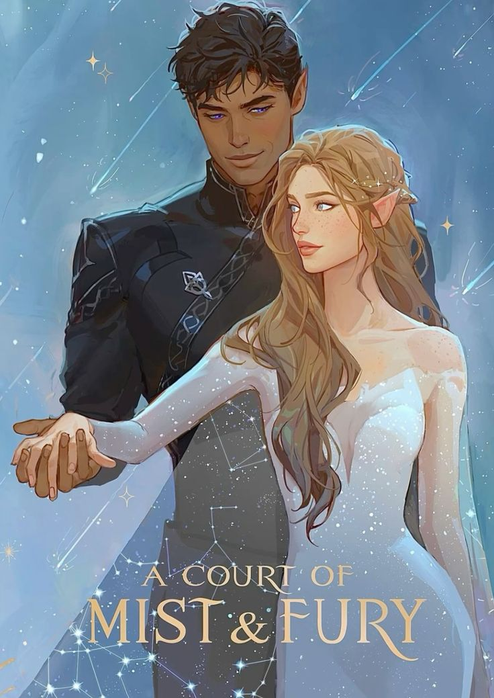
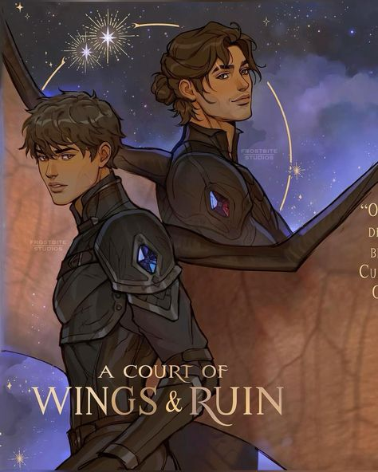
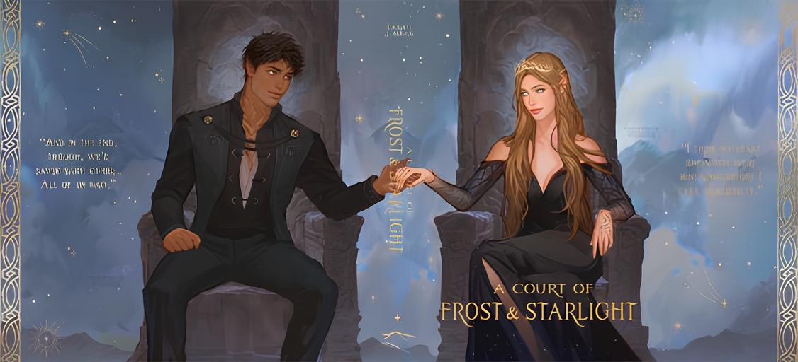
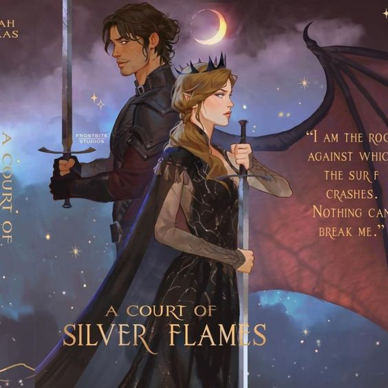

Feyre Archeron vivia em um mundo onde humanos e seres mágicos, chamados feéricos, coexistem em um frágil equilíbrio após uma grande guerra há 5 décadas atrás, separados apenas por uma antiga muralha. Da noite para o dia, vê o seu destino virar ao avesso quando ela mata um feérico transformado em lobo na floresta para sustentar sua família.
"Uma vida por uma vida"
Uma besta grande e feroz aparece em sua casa, anunciando que Feyre havia infringido o contrato de paz entre as duas espécies quando matara um feérico, e para pagar, teria de morrer. Após seu pai implorar por sua vida e oferecer qualquer tipo de alternativa ao pagamento, a besta decide então levar Feyre cativa à Prynthian, terra feérica acima da muralha, para viver lá o restante de sua vida.
Um Palácio e um Carcereiro Inesperado
Em Prythian, Feyre descobre que seu captor não é um monstro, mas Tamlin, o Grande Senhor da Corte da Primavera. Apesar de ser mantida prisioneira, ela é tratada como uma princesa. No entanto, Feyre logo percebe que as coisas não são tão simples quanto parecem, e que há um grande mal se espalhando por Prythian.
Amor, Traição e Perigo
Conforme Feyre se adapta à vida em Prythian, ela desenvolve sentimentos por Tamlin e começa a questionar tudo o que sabe sobre o mundo humano e o mundo feérico. Mas nem tudo é o que parece, e Feyre logo se vê envolvida em uma trama perigosa que ameaça tanto a ela quanto a todos os reinos.
"Amo-te. Com espinhos e tudo."
Após a situação agravar na Corte da Primavera, Tamlin decide mandar Feyre de volta a sua casa. Apesar dele já ter declarado seus sentimentos por ela, Feyre negou-se a dizer o mesmo. Após conversar com sua irmã, decide voltar para a Corte da Primavera, e ao ver tudo em ruínas e encontrar apenas sua antiga criada Alis, Feyre finalmente descobre a verdade sobre a praga que assolava Prythian.
Sob a Montanha
Após seguir para Sob a Montanha, o calabouço onde Tamlin estava, Feyre luta pela sua vida em três desafios para provar seu amor pelo Grande Senhor e, assim, salvar não só seu amado como toda Prythian. Em estado de vida ou morte, a protagonista acaba por aceitar as ajudas de Rhysand, o Grande Senhor da Corte da Noite, a um troco que só deveria esperar se conseguisse sobreviver ao circo dos horrores em que se via presa. Amarantha, após propor os acordos à Feyre, determina que poderia acabar com tudo imediatamente se a humana adivinhasse um enigma proposto pela dominadora.
De Humana a Feérica
Após completar o desafio final, Amarantha revolta-se contra Feyre e mata-a. Nos seus últimos suspiros, consegue decifrar enfim o enigma e todo o poder roubado regressa a seus donos e Tamlin acaba com ela. Conjuntamente e num gesto de gratidão, todos os 7 Grandes Senhores de Prythian decidem dar a semente de seu poder para ressuscitar Feyre, desta vez feérica.
"Agradece pelo teu coração humano, Feyre. Tem piedade dos que não sentem nada."
Assim que acorda, Feyre vê cada Grande Senhor seguir para sua Corte, não sem antes agradecê-la por seu sacrifício pela vida de todos. Numa última conversa com Rhysand, ela admite não se contentar em como as coisas acabaram para ela, enquanto ele, num ímpeto de consciência, simplesmente foge. O livro acaba com Feyre retornando à Corte da Primavera.
Corte de Névoa e Fúria

“Feyre, a Quebra-Maldições”
Após uns meses desde a queda de Amarantha, Prythian ainda está a se reerguer novamente, mas superar não é uma tarefa tão fácil. Com o novo corpo feérico e pesadelos que não têm fim, Feyre está a sombra do que um dia foi: sente-se culpada com as vidas que matara e com a alma que havia sido destruída em Sob a Montanha. Em contrapartida, Tamlin a pede em casamento, e juntamente com Ianthe, anda a preparar os detalhes para o grande dia.
"Oi, Feyre Querida"
Finalmente, no casamento de Feyre e Tamlin, a recém feérica trava a meio do altar e começa a clamar, em silêncio, que alguém a ajudasse, pois sentia que nunca iria se curar e não merecia seguir em frente. De repente, o tempo fecha-se e trovões inundam o céu, e o Grande Senhor mais poderoso de Prythian surge e leva Feyre para cumprir a marca do acordo na palma de sua mão, os sete dias na Corte da Noite. Por mais que fosse um lugar totalmente desconhecido por qualquer um, sente uma paz há muito tempo esquecida, na semana de cada mês em que lá ficava.
Problemas "Matrimoniais"
Se era tratada com liberdade quando cativa, agora Feyre não é permitida sequer a sair de casa. E depois de tanto sangue, não consegue pintar. Com tantos desentendimentos pela conduta da Corte da Primavera e pela forma que Tamlin tratava ela e Lucien, eles desentendem-se e Tamin magoa-a. Não apenas uma vez. E quando tenta trancá-la dentro de sua casa, Feyre explode em trevas e é levada de lá por Morrigan, para a Corte de Rhysand.
Novo Lar
Ao passar tempo na Corte da Noite por medo de regressar a Tamlin, Feyre explora mais seus poderes herdados das sete Cortes e cria intimidade não só com Rhysand, mas como todo o seu círculo íntimo. Também descobre Velaris, uma cidade intocada por qualquer feérico exterior à Corte desde sempre. Seu tempo de qualidade com o Grande Senhor fazem-na questionar seus sentimentos enquanto prepara-se para uma guerra maior do que possa imaginar.
Manipulações e o Caldeirão
Disposta a ajudar na guerra que aí vinha, Feyre une-se a Rhysand para ir atrás de artefatos para obterem o Caldeirão, um antigo e poderoso artefato no qual gerou-se o mundo. Para isso, tiveram que manipular o Grande Senhor da Corte do Verão, convencer as irmãs Archeron a cederem sua casa para se reunirem com as Fadas Humanas e, como prova da bondade de Rhysand, expor pela primeira vez Velaris. Infelizmente, as Fadas Humanas na verdade alinharam-se com o outro lado da guerra e Velaris foi atacada pela primeira vez.
"O Grande Senhor da Corte da Noite é o teu parceiro."
No meio do campo, depois de um ataque que derrubara Rhysand, Feyre vai atrás de uma cura e descobre que Rhysand era mais que um amigo, mais que um amante, mais do que qualquer um poderia se tornar para ela: era seu parceiro. Não sentiu-se feliz no início pelo Grande Senhor não tê-la contado antes, mas ao ouvir toda a história, aceitou o laço de parceria com ele.
Rei de Hybern
Numa última missão atrás do Caldeirão, Feyre, Rhysand, Morrigan, Azriel e Cassian caem numa armadilha do rei de Hybern, que além de já possuir o Caldeirão, aliara-se com Tamlin na guerra, desde que Feyre fosse devolvida a ele. O rei ainda conseguiu sequestrar Nesta e Elain e, para mostrar às Fadas Humanas os poderes do Caldeirão, jogou as irmãs lá dentro e fê-las se tornarem feéricas.
Um Último Sacrifício
Ao ver seus amigos magoados, suas irmãs no chão, todo o plano de triunfo para a guerra ser despedaçado, Feyre faz um último sacrifício. Com uma explosão de luz, começa a agir como se tivesse estado em cativeiro em sua própria mente durante todos aqueles meses com Rhysand, e ao simular o seu laço de parceria sendo “Desfeito”, Feyre implora para voltar para a Corte de Tamlin. Com Rhysand e todos os seus amigos a entrarem no seu disfarce, Feyre segue com Tamlin e Lucien para a Corte da Primavera, Rhysand, Morrigan, Cassian, Azriel e as irmãs Archeron para a Corte da Noite e o rei juntamente com as Fadas para Hybern, levando consigo o Caldeirão.
Corte de Asas e Ruína

De Volta à Corte da Primavera
A Quebra-Maldições está de volta à Corte com Tamlin, mas agora, nada ficou igual. Disposta a obter informações sobre Hybern e destruir Tamlin e Ianthe, Feyre começa um jogo de mentiras e manipulações enquanto lida com o povo hyberiano na Corte.
Fuga Mútua
Preparada para finalmente fugir, Feyre encontra Lucien no meio da floresta sendo abusado por Ianthe, e com seus poderes de daemati, faz Ianthe quebrar sua própria mão e coloca uma maldição em sua mente, livrando Lucien que decide juntar à ela na sua missão de volta à Corte da Noite, atravessando a Corte do Inverno e Outono até serem confrontados por inimigos.
Grande Senhora da Corte da Noite
Feyre anuncia seu título oficialmente quando Azriel e Cassian aparecem para ajudá-la em seu confronto e levá-la (e a Lucien) para Velaris, onde reencontra Morrigan, Amren e seu parceiro, o Grande Senhor Rhysand.
Guerra, Guerra e mais Guerra
Assim que regressa à sua Corte, Feyre agora precisa unir Cortes e preparar exércitos para a grande guerra entre Hybern e Prythian, encontrando aliados até nas terras humanas. Mesmo assim, no confronto final, o exército hyberiano mostra-se infinitamente maior e é preciso fazer sacrifícios maiores que o imaginado.
"Tu não toques na minha irmã."
No último confronto entre o rei e Cassian, este acaba gravemente ferido e Nesta tenta defendê-lo, mas nem a morte encarnada era capaz de acabar com o hyberiano. Num ímpeto, um herói misterioso aparece e esfaqueia o rei no pescoço, quando Nesta assume comando e decepa a cabeça fora.
Sacrifícios Letais
Quando Feyre entende o que é preciso para acabar com os exércitos, usa o Caldeirão para soltar Amren do seu corpo feérico e assumir sua forma final, aniquilando no mesmo instante toda Hybern. Infelizmente o seu grande poder acaba por quebrar o Caldeirão e Rhysand oferece o resto de seu poder para consertá-lo, caindo morto no final.
"Sê Feliz, Feyre"
Como um ato de gratidão, os Grandes Senhores voltam a oferecer uma semente de seus poderes para ressuscitar Rhysand, e assim, a guerra é findada.
Corte de Gelo e Estrelas

Uma parte dos fãs considera este livro uma "novela" à parte, tanto por ser extremamente pequeno comparado aos outros, mas também pela história ser curta.
Cura da Guerra
Com diferentes pontos de vista, observamos a reconstrução física e psicológica do que restou da guerra. Apesar de noites mal dormidas e pesadelos diurnos, os amigos encontram forças uns nos outros enquanto ajudam não só Velaris como toda Prythian a se reconstruir.
Solstício de Inverno
Como tradição na Corte da Noite, Feyre junta-se a Rhysand, Cassian, Azriel, Morrigan, Amren, Varian, Lucien, Elain e Nesta para uma troca de presentes enquanto comemoram a vida depois de tanta tensão e guerra, mesmo com problemas entre si.
Corte da Primavera
Num irónico passeio de Rhysand à Corte da Primavera, encontra-a pior do que um dia foi: o povo havia partido, a Corte não havia sido reconstruída e seu Grande Senhor, Tamlin, estava de rastos. Por seu orgulho e más decisões, afastara até seu amigo mais próximo, Lucien, de sua corte.
Abertura para Mais Livros a Seguir
Quem será a parceira de Azriel? O que Morrigan anda planejando secretamente? Nesta e Cassian hão de ter alguma relação? A parceria de Lucien e Elain vai vingar? Muitas perguntas ficaram em aberto neste livro, mas segundo a autora, tudo acabará com um ponto final, sendo então esperado mais três livros.
Corte de Chamas Prateadas

Frente a Frente Consigo Mesma
Neste spin-off da série, Nesta é mandada para a Casa do Vento, mais longe da cidade, para que conseguisse lidar consigo mesma e viver junto à natureza, visto que ela havia entrado numa depressão profunda. Lá, ela precisa conviver com Cassian, que decide ajudá-la a treinar.
Tensão Exagerada
Com a convivência exagerada com o general, Nesta começa a questionar seus sentimentos enquanto descobre mais sobre quem realmente é e os sentimentos que a amedrontam há anos.
MAIS uma Guerra Iminente
Com o estranho comportamento das Rainhas Mortais, agora feéricas, é preciso a união das Cortes para se prepararem para a guerra e Nesta, com o poder roubado ao Caldeirão, torna-se um elemento essencial para a batalha que há de vir.
E Depois?
Como ainda não lemos o quinto livro, não é possível explicar mais sobre os acontecimentos do livro, mas a autora afirmou que a sorte de Azriel muda ao conhecer uma nova personagem neste sedutor spin-off de Corte de Espinhos e Rosas.